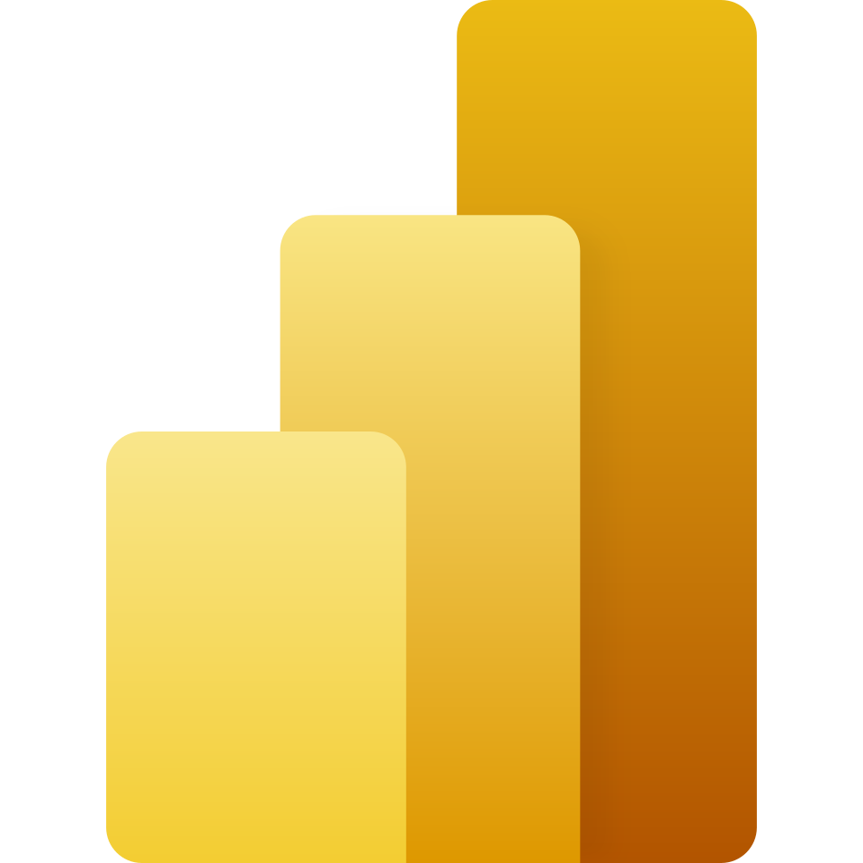

Análisis con contexto
Cada proyecto parte de una pregunta clara. El análisis busca revelar patrones, relaciones y oportunidades, no sólo describir datos.
Análisis de datos · Visualización · Big Data
Soy analista y visualizador de datos con enfoque en hallazgos accionables y soluciones estratégicas. En este portafolio presento algunos proyectos donde convierto datos e información compleja en mensajes claros para apoyar decisiones.
Sobre mí
Soy Santiago Ríos Benjumea, un profesional orientado al análisis y la ciencia de datos, con experiencia en la recolección, tratamiento, modelado y visualización de información para apoyar la toma de decisiones estratégicas, la optimización de procesos y la generación de conocimiento basado en datos.
Actualmente soy candidato al título del Máster Oficial en Análisis y Visualización de Big Data, y he liderado proyectos donde el uso de Python, SQL, Power BI y técnicas de machine learning ha sido clave para comprender fenómenos complejos y aportar valor en distintos contextos.
Mi perfil combina competencias analíticas con una visión aplicada de la tecnología para resolver problemas reales, especialmente en ámbitos relacionados con la adminsitración académica, el consumo de alimentos y la sostenibilidad. Además, mi formación interdisciplinar me ha permitido desarrollar una mirada interdisciplinaria sobre los alimentos, el comportamiento humano y los contextos educativos.
Enfoque
Mi propuesta combina lectura analítica, diseño de visualización y construcción de narrativas para que los datos no sólo sean legibles, sino que expliquen algo importante.
Cada proyecto parte de una pregunta clara. El análisis busca revelar patrones, relaciones y oportunidades, no sólo describir datos.
Las visualizaciones deben facilitar comprensión. Priorizo claridad, jerarquía visual y mensajes directos antes que complejidad innecesaria.
Un buen proyecto de datos no termina en un dashboard. Termina cuando el hallazgo se convierte en una decisión, una recomendación o una nueva forma de entender el problema.
Preguntas de valor
¿Qué patrones explican cambios en usuarios, clientes o procesos?
¿Qué indicadores muestran oportunidades de mejora o riesgo?
¿Qué grupos o perfiles se comportan de forma distinta y por qué?
¿Cómo organizar y procesar grandes volúmenes de información para extraer valor?
Proyectos
Estos proyectos muestran el resultado de visualizaciones con contexto, hallazgos claros y utilidad para la toma de decisiones.

Visualización · Mercado inmobiliario
Dashboard orientado a explorar la distribución de anuncios de Airbnb en Madrid, identificar zonas con mayor concentración de oferta y analizar la relación entre precio, disponibilidad y demanda aparente a partir de reseñas.
Comparar barrios y distritos para entender patrones territoriales en la oferta de alojamientos y su comportamiento en precio y ocupación.
Permite detectar zonas de alta actividad, diferencias por tipo de habitación y posibles oportunidades de análisis para turismo urbano y alojamiento temporal.

Business Intelligence · Calidad industrial
Dashboard diseñado para monitorear indicadores de producción textil, metros clasificados, porcentaje de no calidad, defectos principales y resultados de laboratorio por lote, color y área.
Integrar en una sola vista los principales indicadores de producción y calidad para facilitar el seguimiento operativo, detectar defectos recurrentes y comparar resultados entre procesos, lotes y áreas.
Permite identificar puntos críticos en la calidad textil, priorizar acciones correctivas y mejorar la lectura de desempeño mediante métricas claras y visualizaciones orientadas a la toma de decisiones.

Análisis aplicado · Alimentación y sostenibilidad
Visualización comparativa por país que integra indicadores de perfil nutricional, costo de dieta saludable, capacidad de acceso y peso del gasto en alimentación, con enfoque territorial y lectura longitudinal.
Comparar países de la Unión Europea para analizar la relación entre calidad nutricional, costo de una dieta saludable y condiciones de acceso alimentario en distintos contextos territoriales y temporales.
Facilita una lectura comparativa de desigualdades alimentarias, permite detectar patrones entre nutrición y asequibilidad y aporta evidencia útil para reflexión, investigación y análisis de políticas públicas.
Proceso
Empiezo entendiendo el contexto, definiendo el objetivo y la decisión que se quiere apoyar.
Organizo fuentes, limpio datos y realizo análisis exploratorio para identificar señales.
Busco patrones y relaciones que respondan la pregunta original o abran nuevas hipótesis.
Selecciono la mejor forma de comunicar el hallazgo con claridad, jerarquía y foco.
Presento conclusiones y recomendaciones para facilitar comprensión y decisión.
Habilidades
Organizo mis habilidades en bloques que representan cómo abordo un proyecto completo, desde la preparación del dato hasta la comunicación del hallazgo.



Propuesta profesional
Me interesan retos en los que los datos permitan descubrir patrones, mejorar procesos, comunicar evidencia con claridad y construir soluciones útiles para personas, equipos u organizaciones.
Hablemos de datosContacto
Puedes escribirme para colaborar, conversar sobre proyectos o conocer más sobre mi trabajo.